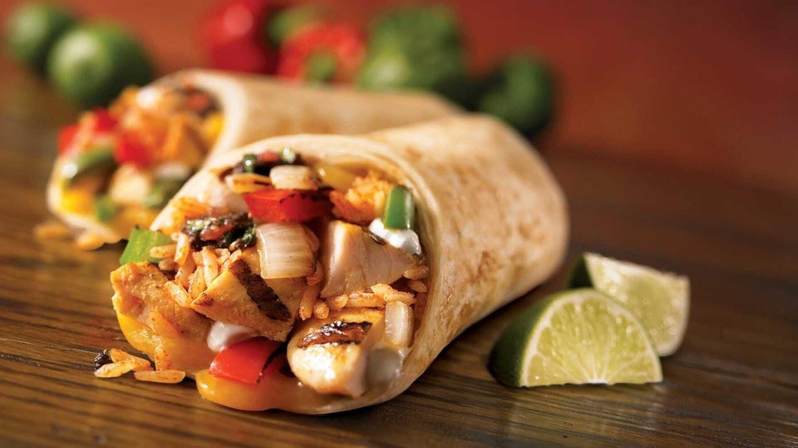

Zurück zur Übersicht
Burritos mit Reis und Linsen
Weizentortillas mit einer Füllung aus Hackfleisch, Reis, roten Linsen, Mais und Kidneybohnen, kurz mit Käse überbacken.
- Zeit
- 30 Min.
- Schwierigkeit
- leicht
- Kategorie
- Pfanne
- Ernährung
- mit Fleisch
Zutaten
Portionen
- 6Weizentortillas
- 500 gSchweinehackfleisch
- 1Paprikaschote
- 1Zwiebel, gehackt
- 1 DoseMais
- 1 DoseKidneybohnen
- 1 ELTomatenmark
- Salz und Pfeffer
- Chili
- 1 PriseZucker
- 200 gGeriebener Käse
- 80 gReis (roh)
- 50 gRote Linsen (roh)
- Etwas Öl
- Wasser oder Brühe (200–250 ml bei 3 Portionen)
Zubereitung
- Reis und Linsen in einem Sieb kurz abspülen. Das Hackfleisch in einer großen Pfanne in etwas Öl anbraten und mit Salz, Pfeffer und Chili würzen.
- Paprika klein schneiden und mit der Zwiebel dazugeben. Reis und Linsen einrühren und kurz mitrösten. Wasser oder Brühe angießen, Deckel auflegen und etwa 10 Minuten köcheln lassen, bis Reis und Linsen fast gar sind.
- Mais und Bohnen abtropfen lassen. Die Tortillas 8–10 Minuten im Backofen vorwärmen.
- Mais und Bohnen in die Pfanne geben und das Tomatenmark unterrühren, bis die Masse leicht rötlich ist. Eine Prise Zucker darüberstreuen und alles noch 3–4 Minuten braten, bis die Flüssigkeit weitgehend eingekocht ist.
- Tortillas mit etwas Käse bestreuen und nicht zu viel Füllung daraufgeben. Einrollen und dabei das untere Ende umklappen. In eine Auflaufform legen, mit dem restlichen Käse bestreuen und bei 210 °C etwa 5 Minuten überbacken, bis der Käse geschmolzen und goldbraun ist.